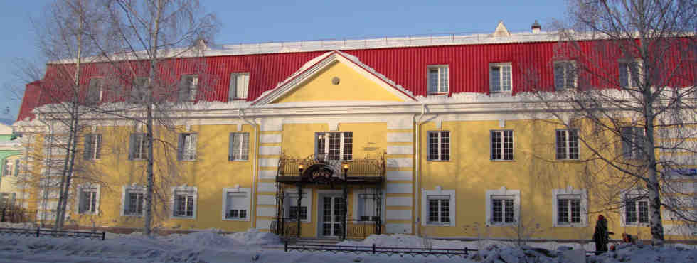

Музейно-выставочный комплекс
Этот дом выстроил сам Павел Петрович Бажов около ста лет назад.
Все свои произведения, в том числе самую известную книгу сказов писателя «Малахитовая шкатулка» (1939 год), «Дальнее-близкое» (1949 год), Бажов написал в этом доме, на углу улиц Архиерейской (нынешней Чапаева) и Болотной (нынешней Большакова).
С 1906 года, до постройки нового дома, Бажов жил в не сохранившемся до нынешнего времени небольшом доме на той же Болотной улице, недалеко от перекрёстка.
В 1911 году Бажов начал строить свой дом.
С 1914 года, до отъезда в Камышлов, семья Бажовых жила в нём.
В 1923 году Павел Петрович вернулся в этот дом и жил здесь до конца своей жизни.
После ухода из жизни писателя, до 1968 года, в доме жила его жена — Валентина Александровна.